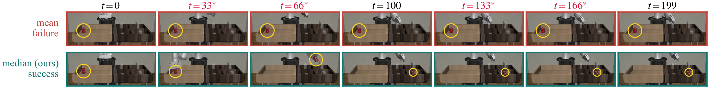

Training-Free Robust Aggregation for Action-Chunked Visuomotor Policies
University of Trento · jyhtjtj@gmail.com
Action-chunked visuomotor policies predict overlapping trajectories, so every executed action is covered by several predictions. Temporal ensembling smooths execution by combining these predictions with an exponentially weighted mean. One corrupted prediction can move the aggregate without bound: its breakdown point is 0. We use adversarial corruption to stress this deployed aggregator and to compare two kinds of guarantee. A metric guarantee bounds the response to a perturbation of a given size. A combinatorial guarantee instead bounds the damage when at most q of the M candidates covering a timestep are corrupted, whatever their size. Encoder adversarial fine-tuning recovers 44% of the loss under the published patch attack, but only 7.3% after the attacker's step size is increased. By contrast, the coordinate-wise median of the same candidate set keeps its recovered fraction flat as attack optimisation increases. Median temporal ensembling costs one line and requires no retraining. Across 25 (configuration, corruption-level) combinations it is never worse than the mean and is significantly better in 15. It also transfers to a second policy class, and it recovers performance under a failure with no attacker in the loop at all: camera frames that arrive blank. Its effect on clean data is configuration-dependent, from -0.04 to +0.07. We also give the boundary: corruption that shifts every covering prediction by the same amount is invisible to this whole family of statistics, and no equivariant aggregator can remove it.
A policy like ACT or Diffusion Policy predicts a chunk of future actions, executes the first few, then predicts again. By the time an action runs, several earlier chunks have already predicted it. Below are seven such predictions for one action dimension. Corrupt some of them and push.
A holds the overlapping predictions for the current timestep, one row
per query. The weighted mean is what ACT deploys; the median is ours.
# age 0 = newest prediction
w = np.exp(-m * age)
w = w / w.sum()
action = (w[:, None] * A).sum(axis=0)
# same candidates, same timestep action = np.median(A, axis=0)
Rollouts are played at 1.5x speed. Narration is a synthesized voice; the subtitles follow it word for word.
Diffusion Policy on robomimic and PushT, two backbones and four execution strides, under sparse burst corruption. Each row is one (configuration, corruption level) pair; the line runs from the weighted mean to the median. Hover a row for its p-value.
Blank camera frames on 2 of every 7 queries, the kind a driver that zero-fills on timeout produces. Task: can.
An ACT policy on can at q=2. The mean wins no episode.
Encoder adversarial fine-tuning makes the encoder less sensitive to a perturbation of a given size. It recovers 44% of the loss under the published patch attack and 7.3% once the attacker's step size is raised. The median's recovered fraction stays flat as optimisation effort grows.
Vertical axis: fraction of the attack-induced loss that the defence recovers; the perturbation bound is fixed throughout. Horizontal axis: optimisation effort relative to each attack's own baseline, in PGD iterations for the burst curves and in optimiser step size for the patch curves. Hollow stars mark the released patch. Error bars are ±1 standard error.
We split the predictions at every timestep by whether their query was corrupted, and counted how often each aggregator's output left the range of the clean ones. Over the 53,704 timesteps at which fewer than half were corrupted:
times the median left the clean range
of those timesteps, the weighted mean did
If every covering prediction is shifted by the same amount, the predictions still agree with each other. Nothing is outvoted. This corruption is invisible to every statistic that compares predictions with one another, and no equivariant aggregator, the median included, can remove it. We state it as a limit of the method.

One episode of can at h=2, q=3, run twice from the same seed and under the same attack, changing only the aggregator: the weighted mean (top) fails and the median (bottom) succeeds. A star marks a corrupted query window. Frames are a third-person render for visualisation only; the policy sees two 84×84 views.
@article{jiang2026median,
title = {Median Temporal Ensembling: Training-Free Robust
Aggregation for Action-Chunked Visuomotor Policies},
author = {Jiang, Yuhang},
journal = {arXiv preprint arXiv:2609.27167},
year = {2026}
}